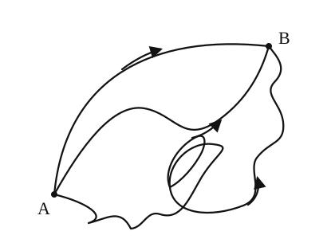
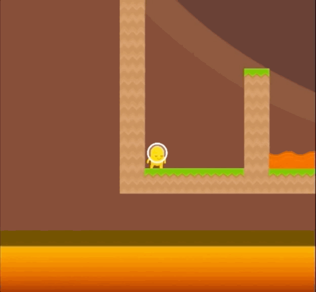
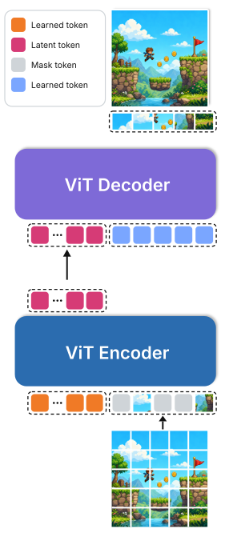
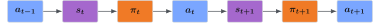
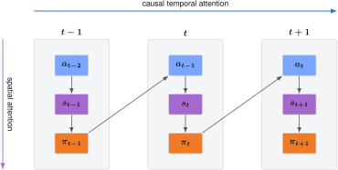

In the last few months we’ve been working on making a frontier-level world model. We release and open source the model, the training code, and in this blog post with all the lessons we learned along the way. We want to make frontier research accessible to everyone and hope this will accelerate progress in the field.
A survival guide to training a world model
We do these things not because they are easy, but because we thought they were going to be easy

When starting a new project, you have to define:
- The goal
- The starting point
- The search space
Our main objective was to reproduce the Dreamer4 paper
We purposefully refrained from using different methods that were not in the original paper as that would have made the search space wider.
The starting point

This is coinrun: It’s a 2D platform game where each level is procedurally generated. As the name would suggest, the goal is to run to get the coin.
With this simple game it is possible to do every step of the Dreamer 4 paper but with some really nice added benefits:
- Just one gpu (much simpler to debug)
- Fast iteration loop (much smaller training time)
- Once done, the codebase will have all the core logic ready and working
The search space
The architecture is made of two main parts: The tokenizer and the dynamics model. Both use the same model architecture backbone: the block-causal transformer.
What sets it apart is the fact that there are two different attention-based layer
- Space Layer: where information propagates within all the elements that represent a single frame
- Causal Time Layer: where information propagates between different frames
The Tokenizer (Autoencoder)
If you have ever trained a VAE in the past, you know how terrible of an experience that is. Most of the time the wisest thing to do is to give up and take an off-the-shelf one.
In this project we’ve trained a transformer-based Masked Autoencoder with 100x compression, and we probably could have aimed higher.
This architecture is really cool because:
- Masking makes the latent space more diffusable
- There is no need for the KL and adversarial loss
- It’s very fast to train
- It’s scalable
- All of the above make it easier to train compared to the typical VAE
The Dynamics Model (World Model)
World models fundamentally work by doing “next frame prediction”. Each frame is generated as an image conditioned on the previous ones. The dynamics model is trained with diffusion forcing with flow matching and shortcut models.


Other than predicting just the next frame, we worked on predicting the next action as well. Typically, the rollout alternates between the world and the agent. Given the previous action, the dynamics predicts the next state; the policy observes that state and samples the next action:

Evaluating the transition and policy as separate modules would require repeatedly moving between them. It would also prevent them from sharing the same representation and transformer parameters. Instead, we would like to process all timesteps in parallel during training and reuse the same computation for both the world and the agent.
This architecture folds the sequence into blocks:
$$ B_t = (a_{t-1}, s_t, \pi_t) $$Within each block, spatial attention implements $(a_{t-1} \to s_t \to \pi_t)$

What does $s_t$ contain? The state is the part generated through diffusion—or, more precisely, the model diffuses its latent spatial tokens. The state computation therefore includes:
- a noise-level token describing how corrupted the current latent is;
- a shortcut step-size index describing how far the model should advance in one denoising step, following Shortcut Models
; - spatial latent tokens representing the visual state;
- register tokens, which provide shared workspace for internal computation.
Together, these tokens let each space layer turn the previous action and a noisy latent into the next clean latent state.